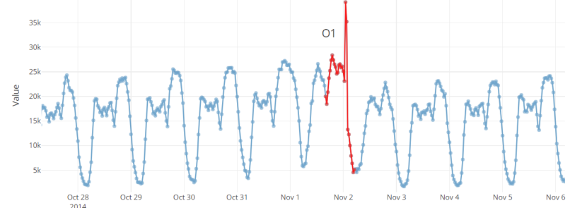

时间序列异常评估
时间序列异常检测
时间序列无处不在！在网站上的用户行为，股票的价格，服务器的数据波动，工业中的各种传感器等等。时间序列数据在各个行业中都广泛存在，自然，它也是研究最多的数据类型之一。对于时间序列的分析可以为公司增加利润，指导公司的战略部署，在工业生产中可以指导技术员快速发现和定位生产中的问题。因此对于时间序列中的异常值的分析十分必要，一般而言，很多异常可以通过人工的方式来判断。然而当业务组合复杂、时序规模变大后，依靠传统的人工和简单的同比环比等绝对值算法来判断就显得捉襟见肘了。因此，在面对各种各样的工业级场景时，系统的了解时间序列异常检测方法尤为重要。
时间序列中的异常类型
异常值（Outlier）
波动点（Change Point）
断层异常（Breakout）
异常时间序列（Anomalous Time Series）
引用
1. Anomaly Detection in Time Series
Heraldo Borges, Reza Akbarinia, Florent Masseglia. Anomaly Detection in Time Series. Transactions on Large-Scale Data- and Knowledge-Centered Systems, Springer Berlin / Heidelberg, In press. fflirmm-03359500f
时间序列基本概念
时间序列定义：其中每个是时间点的观测值
子序列:

图1 时间序列和子序列
时间序列模式：
- 季节性
- 趋势性
- 稳定性
时间序列异常
- 点异常(Point anomaly)：一个单独的观测结果相比一组观测结果发生偏移
- 上下文异常(Contextual anomaly)：序列和发生背景冲突，如冬天发生高温
- 序列异常(Collective anomalies)：当单个观测值没有发生异常，但是多组连续的观测值组合起来时发生异常
异常检测
异常检测也被称为离群值检测、事件检测、新颖性检测、漂移检测、变化点检测、故障检测或误用检测
异常检测是一个广泛的领域，在许多应用领域，如入侵检测、欺诈检测、工业3.0、系统健康监测、网络传感器事件检测、生态系统干扰检测。由于其类型和技术的多样性，因此有必要了解异常的属性
- 时间：当与一些时间信息相关联时，异常可以是时间性的。这些现象通常是在时间序列以及流媒体数据和医疗数据中发现的异常现象。
- 标签：一些数据集有标签用于指示该数据的类别。一般来说，有标签的数据只是全部数据的一个子集。监督学习方法通常使用有标签的数据进行训练，然后对新数据进行预测。
- 维度：当仅用一维表示时，异常可以呈现单变量数据，当表示一组变量时用多变量表示，生成多变量数据。
异常检测方法
时间序列的异常检测方法可分为两大类。有一些基于时间序列预测的方法，它们代表了大多数的统计方法 .另一类是基于时间序列异常特征的方法。
- 基于统计的方法
- AR
- MA
- ARMA
- 基于聚类的方法
- DBSCAN
- K-Means
- 矩阵剖面技术
- STAMP
- STOMP
- SCRIMP++
- AAMP
2. Time Series Anomaly Detection
Shipmon D T, Gurevitch J M, Piselli P M, et al. Time series anomaly detection; detection of anomalous drops with limited features and sparse examples in noisy highly periodic data[J]. arXiv preprint arXiv:1708.03665, 2017.
摘要
Google使用预测的方法对无标签时间序列进行异常检测，通过对比预测值和真实值的差距来判断是否异常，这篇文章致力于检测序列异常而不是点异常
异常判定方法
- 预测值和真实值之间的欧氏距离：在存在噪音的数据集上会出现大量假阳性
- 两种异常检测规则：累加器来识别连续异常；概率方法检测异常值，两种方法都是用多个点来决定是否为异常以降低假阳性率
- 基于 Numenta 公式的方法通过对比短期方差和长期方差来比较
- 累加器容易修改，可控制；统计方法给出离群值的百分比，并且可以多个模型相乘给出一个鲁棒性更好的得分